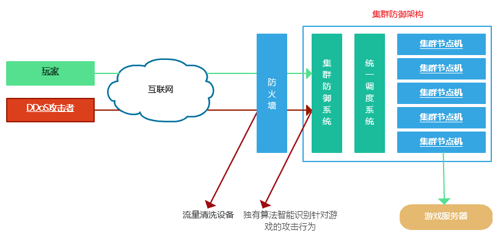

集群防御系统能够针对游戏和网站进行全方位防护，智能分析与识别，完全隔离黑客与您服务器之间的交互连接，并快速拦截。
机房防火墙层主要负责拦截流量攻击，其他针对游戏层面的攻击硬防很难识别（假人攻击、CC/SYN Flood、游戏端口并发数等攻击），因此会甩到集群防御系统中进行过滤和拦截，通过多层过滤从而把恶意数据拦截在外，不会转发到后端游戏服务器。
在集群防御架构的基础上延伸出两种防御模式，分别为：前端集群转发和分布式网状集群。
前端集群转发模式：
在游戏服务器与访问者之间接入集群防御系统(如图)，从而隔离外界与真实服务器直接交互，所有的请求都通过我们的集群系统转发，对外隐藏您游戏服务器的真实IP，一旦有黑客攻击，前端集群会作为替身挨打，从而避免对后端真实服务器造成影响。
一般情况下前端集群转发可以使用我方提供的高防服务器，用户也可自行提供服务器我方负责部署。
建议都是采用高防服务器（网状式集群模式无需高防服务器），台数一般固定在3台左右即可。可以根据实际情况增减。一旦其中一台被打封或者机房故障能够自动切换到其他可用节点，多台做前端可以对玩家和流量攻击进行分流，让部分在不同机房的服务器进行流量分散过滤。
此模式高防服务器可以用低防御服务器也可以再有攻击时自动提高防御级别，如果流量过于庞大可以接入电信骨干网清洗，自始至终真实后端服务器IP都是对外隐藏的，永远打不死，可以根据攻击实际情况以及资金预算来动态调整前端集群服务器数量或者硬防防御级别。
分布式网状集群：
此模式与前端集群转发模式类似，只是节点数量要更多并且有统一调度系统，建议100个节点以上。
根据算法平均分布玩家到每个节点上面。
采用一台主控端（即图上的统一调度系统）来根据算法统一分配玩家连接，主控端会对所有集群节点进行健康检查，并且批量调取每台上面当前玩家连接数，如果连接数为0或者少于设定值（默认为6），就优先进行解析和转发，当主控端一旦发现候选解析的节点连接数大于设定值这台节点机就封装起来，不再参与解析，直到连接数少于设定值，在此期间这个节点IP在互联网上是完全探测不到的，只有连接在里面的玩家才会连接。
同一时刻只解析到一个节点IP上，而非同时解析到所有的节点。
即使有黑客采用DDoS方式攻击，他们探测到的节点IP上面可能玩家连接数为0或者1~2个玩家而已。玩家重连会立马连接新节点上面。
所有的节点机都由主控端统一管理，有自主学习和分析能力，会越用越智能。
被攻击封的节点会在30分钟内解封，会被做上标记，短时间内不会参与转发，直到不再对这个节点连续攻击为止。
节点机可以采用阿里云最低配置的服务器（68元/月）即可，由于节点机都是优化过的CentOS系统加上阿里云BGP机房的稳定性好，因此完全满足实际需求。
在现有客户案例中，采用分布式网状集群的客户都得到了很好的保障，未出现过任何影响和损失。
由于传统硬防模式，服务器IP地址是暴露的，因此，黑客目标很明显就是全力打击一个或者几个固定IP，超过防御阈值机房就会封IP，即使勉强抵御也会出现丢包的情况，要实现电信清洗完全防御至少费用在30万/月以上。
而采用分布式网状集群，会大大节省费用，黑客攻击目标将成为成百上千个节点IP，而对于很多雇佣黑客攻击的方式来说，黑客是不可能帮助雇主去耗费时间和技术去分析出所有的节点IP，如果只是攻击某一个或者几个节点IP将无法达到任何目的，因为探测到的节点都是最新参与转发的节点，里面连接数为零或者少于设定值，所有的流量都在攻击一个毫无意义的节点IP。
并且我们会定期更换节点IP再加上算法对节点机的管控和调度，对于攻击者来说将是一个极为困难的任务。
加入集群防御系统非常方便，无需对游戏客户端和服务端做任何修改，只需要将链接游戏的域名或者IP改成我方提供的别名即可。
总结：分布式网状集群
1、平均分布玩家到百余个节点上，每台上面只允许连接几个玩家
2、DDoS攻击将不会对整个集群防御系统造成任何威胁，极大增加了攻击难度和成本
3、完全隐藏真实游戏服务器IP，可以躲避攻击以及相关部门检查
4、投入资金远远小于采用电信清洗的费用
5、扩展、变更灵活，接入便捷
6、24小时实时监控异常，多种告警方式